Tier 3 — Steam¶
Component¶
| Item | What it’s for | Made at | Tags |
|---|---|---|---|
| BF 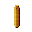 beam frame |
Support beam and cylinder | workbench |
steam, engine, frame |
| CIcast-iron belt pulley | Pass along spinning power | iron anvil block |
mechanical, pulley, belt |
| CIcast-iron firebox | Burning chamber for the boiler | clay casting pit |
iron, firebox |
| FGflyball governor | Regulate engine speed | iron anvil block |
steam, control, governor |
| FI |
Turn beam motion into spinning | iron anvil block |
steam, engine, crank |
| SC 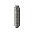 steam cylinder (cast iron) |
Convert steam pressure to motion | iron anvil block |
steam, engine, cylinder |
| SP 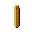 steam piston and rod |
Pass on the piston's push | iron anvil block |
steam, engine, rod |
| WS |
Relieve excess boiler pressure | iron anvil block |
steam, boiler, safety |
| WIwrought-iron connecting rod | Link beam, crank, or pump | iron anvil block |
steam, engine, rod |
| WI |
Carry steam from boiler | workbench |
steam, pipe |
Item¶
| Item | What it’s for | Made at | Tags |
|---|---|---|---|
| SC 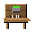 small clay crucible |
Melt small bits of metal | earthen kiln (updraft) |
ceramic, crucible |
Machine¶
| Item | What it’s for | Made at | Tags |
|---|---|---|---|
| JC 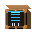 jet condenser |
Run better by turning used steam back into water | workbench |
steam, condenser |
| RBriveted boiler shell | Boil water with charcoal to make steam charges | workbench |
steam, boiler, shell |
| SB 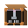 simple beam engine |
Make spinning power from steam | workbench |
steam, engine, prime-mover |
| SF 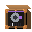 simple feedwater pump |
Push water into boiler | workbench |
steam, pump, boiler |
Material¶
| Item | What it’s for | Made at | Tags |
|---|---|---|---|
| BC |
Industrial coal | fuel, coal, industrial | |
| BLboiler lagging | Reduce heat loss from boilers | workbench |
steam, boiler, insulation |
| BT 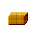 bronze tool blank |
Rough shape for bronze tools | clay crucible (small) |
bronze, tool, blank |
| HIhammered iron plate | Flat plate for boilers and straps | iron anvil block |
iron, plate, wrought |
| HF 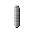 hand-forged iron rivet |
Rivet plates and straps | iron anvil block |
iron, rivet, fastener |
| IS |
Reinforce wooden structures | iron anvil block |
iron, fastener |
| ITiron tool blank | Rough shape for iron tools | iron anvil block |
iron, tool, blank |
| LF |
Transmit power between pulleys | lever press |
mechanical, belt |
| LF |
Crushed rock that cleans the melt (flux) | stamp mill (manual trip hammer) |
flux, limestone, metallurgy |
| SP |
One turn of mechanical shaft work | waterwheel_overshot |
mechanical, shaft, energy |
| SC 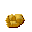 steam charge |
One puff of pressurised steam | boiler_shell_riveted |
steam, energy, fuel |
| SG |
Seal moving piston rods | workbench |
steam, seal, packing |
| WI |
Rod stock for shafts and fasteners | iron anvil block |
iron, rod, wrought |
Mechanism¶
| Item | What it’s for | Made at | Tags |
|---|---|---|---|
| WI 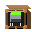 wrought-iron line shaft |
Move mechanical force | workbench |
mechanical, drive, shaft |
Station¶
| Item | What it’s for | Made at | Tags |
|---|---|---|---|
| CCclay casting pit | Shape and pour melted iron | earthen kiln (updraft) |
casting, pit, iron |
| SDsteam drill | Mine an ore deposit by itself | iron anvil block |
machine, steam, drill |
Structure¶
| Item | What it’s for | Made at | Tags |
|---|---|---|---|
| WCwooden cooling tank | Cool water for condenser or process | workbench |
water, cooling, structure |
Tool¶
| Item | What it’s for | Made at | Tags |
|---|---|---|---|
| BA 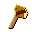 bronze axe |
Fell trees and shape timbers | iron anvil block |
bronze, wood, tool |
| BP 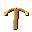 bronze pick |
Mine stone and early ores | iron anvil block |
bronze, mining, tool |
| BSbronze shovel | Move soil and aggregates faster | iron anvil block |
bronze, mining, agriculture |
Field notes¶
The real process behind these items — what they are, how they were used, and why they matter. Tap to expand.
BC bituminous coal
bituminous coal
A soft, black sedimentary coal rich in volatile matter; the standard feedstock for coking in industrial iron and steel plants.
Real-world use · Bituminous seams are mined, sized, and either burned directly in boilers and furnaces or baked in coke ovens to drive off volatiles and leave nearly pure carbon fuel for blast furnaces.
- When · Expanded rapidly with 18th–19th century industrialization and remained a dominant metallurgical fuel into the late 20th century and beyond.
- Where · Coalfields in Britain, continental Europe, the United States, and many other regions supplying ironworks, railways, power plants, and towns built around mines and coke plants.
Why it matters · Bituminous coal is the “starting fuel” for the classic coke-based iron and steel route. In game terms, you can treat it as a step up from wood and charcoal: more energy per cart and a much better match for big furnaces and steam-era plants. In real history, not every coal seam was good enough to make strong coke. Mines that yielded good “coking coal” became strategically important and pulled in railroads, towns, and investors around them.
BAbronze axe
Bronze-bladed axe or adze head, cast and then sharpened, used for felling, hewing, and carpentry.
Real-world use · Bronze axes, often socketed or flanged for strong hafting, served as both tools and prestige items. Properly alloyed and work-hardened edges are durable enough for serious woodworking.
- When · Widespread in Bronze Age toolkits from roughly the 3rd to early 1st millennium BCE, with regional survivals later.
- Where · With woodworkers, builders, and travelers; sometimes also in ritual hoards and burials.
Why it matters · The bronze axe is the workhorse that makes serious timber framing possible before iron is widespread. It symbolizes a step-change in productivity over stone tools. In a tech tree it also distinguishes “we can cut and shape timber reliably” from “we are still hacking at trees with improvised edges,” unlocking more advanced wooden infrastructure.
BPbronze pick
Bronze-headed pick for prying and breaking rock and ore in relatively soft ground.
Real-world use · Early miners used bronze picks where stone or antler tools struggled. While bronze is softer than later iron and steel picks, it can still attack many host rocks and ore veins effectively, especially when regularly resharpened.
- When · Appears in Bronze Age mining districts and persists until displaced by iron and steel tools.
- Where · At early mines and quarries, especially in copper, tin, and surface-approachable deposits.
Why it matters · The bronze pick marks the moment when metalwork feeds back into mining itself: better tools produce more ore, which in turn supports more metal. It also provides a nice contrast with later wrought-iron and steel picks, letting players feel why “stronger, tougher metal” translates directly into deeper, more ambitious excavations.
BTbronze tool blank
Semi-finished bronze casting--rough axe head, chisel bar, or pick body--awaiting grinding, fitting, and hardening.
Real-world use · Founders pour tools close to final shape to save metal and labor. After casting, smiths straighten, dress, and sharpen the blank, then haft it to a handle or socket.
- When · Standard practice in Bronze Age tool production across many cultures.
- Where · On racks in casting and smithing shops, near grindstones and finishing benches.
Why it matters · Like iron tool blanks, bronze preforms abstract away the casting labor from final finishing. One furnace campaign can produce many blanks, which are then cleaned up and distributed as needed. Historically this step allowed specialist founders and regional workshops to mass-produce durable shapes which local smiths and carpenters finished to taste.
CIcast-iron belt pulley
Machined cast- or wrought-iron pulley keyed or shrunk onto a shaft to drive or receive power via a flat belt.
Real-world use · Different pulley diameters set speed ratios between engine, line shaft, and individual machines. Paired 'fast and loose' pulleys let operators shift a belt from a keyed pulley to a free-spinning one to stop a machine without halting the shaft.
- When · 19th and early 20th century across factories, mills, farms, and workshops wherever belt-driven machinery was common.
- Where · On engine crankshafts, line shafts, and machine spindles throughout belt-driven works.
Why it matters · Iron pulleys translate rotational speed and torque between shafts. A small driving pulley and large driven pulley slow things down and multiply torque; the reverse speeds things up while thinning available torque. That simple geometry underlies almost every belt-driven system in the shop. Students can use pulley diameters as a concrete way to think about gear ratios and mechanical advantage. Designers had to balance belt wrap, slip, and shaft loading, which is why you see long centers, jockey pulleys, and carefully chosen belt widths in historical installations. In play, this icon can mark where power is tapped, split, or redirected. A cluster of pulleys on one shaft hints at optional drives, clutching schemes, and the flexibility of mechanical, rather than electrical, distribution.
CIcast-iron firebox
Heavy cast-iron furnace box that holds the grate, ash space, and primary combustion chamber feeding hot gases into a boiler or small industrial heater.
Real-world use · Found under sectional heating boilers, small stationary boilers, and heavy stoves, cast-iron fireboxes provided a durable shell for burning coal or wood. They were often bolted to flue sections or boiler shells and lined or shielded where direct flame could overstress the iron.
- When · Late 18th through early 20th century, particularly in low-to-medium-pressure boilers, shop heaters, and small engines where cast iron was economical and easy to cast.
- Where · Boiler rooms, workshops, foundries, and any small steam or heating plant that needed a rugged, self-contained furnace core.
Why it matters · “Firebox” is the hot heart of any solid-fuel boiler. In cast-iron form it is a thick shell that holds the grate, ashpan, and burning fuel, shaping how air enters and how hot gas is handed off to the boiler tubes or outer shell. Cast iron pours nicely into complex molds and tolerates corrosion well, which is why it dominated stoves and many small boilers. But it is also brittle and vulnerable to thermal shock. Rapid quenching or uneven firing can crack a casting, teaching why firing practice and gradual warm-up matter as much as metallurgy. In-game this box can anchor lessons about combustion: primary versus secondary air, why grates must pass both air and ash, and how furnace shape and gas path strongly influence boiler efficiency and smoke. It also sets up the contrast between “furnace” components and the pressurized water/steam shell they serve.
FGflyball governor
Centrifugal 'flyball' governor with spinning weights that rise with speed and throttle steam to keep an engine near a set running speed.
Real-world use · Driven by a belt or gear from the engine, the governor’s balls swing outwards as speed increases. Linkages then part-close a throttle or move a valve gear to reduce steam admission, settling at a balance between load torque and steam flow.
- When · From late 18th-century Boulton & Watt engines through 19th-century mill and pumping engines, before more sophisticated governors and automatic controls took over.
- Where · Mounted on the column or framing of stationary engines, coupled to the main shaft or flywheel by belt, bevel gear, or vertical spindle.
Why it matters · The flyball governor is one of the earliest clear examples of feedback control. More speed means more centrifugal force, which raises the balls and cuts back the steam. Less speed lets the balls fall, opening the throttle. The system hunts around a setpoint instead of running away to destruction. That makes it perfect for discussing stability, droop, and regulation without heavy math. Students can imagine what happens when the load suddenly increases or drops away, and why governors are adjusted so they do not chase every tiny disturbance. In a game setting this icon signals “controlled engine” rather than a bare cylinder and crank. It reinforces that reliable factory power depends not just on boilers and cylinders, but on clever mechanisms that sense and correct what the machine is doing.
IS iron strap
iron strap
A flat bar or strap of wrought or mild steel used to band boilers, brace timbers, tie beams together, or form lugs and brackets.
Real-world use · Straps are rolled or forged from bar stock and then drilled, riveted, or bolted into place as hoops around boiler shells, reinforcement on wooden beams, and tie rods across masonry or structural frames.
- When · Wrought straps appear with early ironwork; rolled mild-steel straps and flats become standard shop hardware through the 19th–20th century industrial era.
- Where · Boiler shops, bridge works, and building sites, where flat bar is cut and bent into many small but essential fittings.
Why it matters · The iron strap is simple stock turned into hundreds of different little jobs. Historically you see it as boiler hoops, tank bands, truss ties, and reinforcement plates on timber frames. It doesn’t get the glory of beams or rails, but without it boilers would bulge, roofs would rack, and wooden machinery frames would tear apart. In your build sets, treating strap as a separate stock item gives you a way to price all those small brackets, tie rods, and reinforcing details that make large structures feel believable.
ITiron tool blank
Bar or preform of wrought iron intended to be forged into tools, fasteners, or structural parts.
Real-world use · Smiths forge blooms into generic bars and then into semifinished shapes--chisels, hoes, axe heads--before the final hardening and sharpening. Blanks let shops stockpile labor and material ahead of detailed orders.
- When · As soon as wrought iron production is large enough to support a standing tool trade; common in medieval and early modern ironworking.
- Where · In racks and bins around smithies, stored near forges and benches for quick reheat and shaping.
Why it matters · Tool blanks capture the idea that most tools are not made “from scratch”; they are iterated from semi-finished stock. Mechanically they give you a step where alloy, quality, or treatment can branch--letting the same blank become anything from a mundane spade to a carefully hardened edge tool.
JCjet condenser
Direct-contact jet condenser that sprays cold water into exhaust steam so it collapses to warm water and a partial vacuum.
Real-world use · Instead of keeping cooling water and steam separate, jet condensers mix them. Exhaust steam meets injection water in a chamber; the mixture falls to a hotwell or sump while an air pump removes non-condensable gases. Where cooling water is plentiful and purity less critical, this gave a simple way to lower exhaust pressure and improve engine efficiency.
- When · From Watt-era condensing engines through 19th-century stationary and marine practice, later displaced by surface condensers where clean, recoverable condensate was valued.
- Where · Below or beside the engine, connected to exhaust, cooling-water inlets, an air pump, and either a cooling pond or circulating system.
Why it matters · Condensers matter because steam that exhausts into a vacuum can do more work than steam that exhausts to the open air. Jet condensers achieve that vacuum by letting cold water hit the steam directly, which is simple and compact but mixes the condensate with the cooling water. That trade-off is ideal for riverside mills and ships that always have fresh water to throw away, but poor where water is scarce or where the boiler demands very clean feed. In those cases engineers favored surface condensers and feedwater heaters instead. This icon invites questions like: where does the mixed warm water go, and how does the plant keep air out? Learners can be nudged to picture hotwells, air pumps, cooling tanks, and the loop that brings some of that heat back toward the boiler as preheated feedwater.
LF leather flat belt
leather flat belt
Endless or laced flat leather belt that wraps around pulleys to carry torque between shafts.
Real-world use · Tanners produced strong, flexible belting from hides, joined with lacing or metal clips. Properly tensioned belts could transmit significant power over long distances, with operators shifting belts between pulleys or giving them a half-twist to reverse direction.
- When · From the late 18th century through the early 20th century as the dominant factory power-transmission medium, before rubber and synthetic belts became common.
- Where · Between engine flywheels, line shafts, and individual machines in mills, machine shops, sawmills, and farm equipment.
Why it matters · Flat leather belts are the nervous system of a shaft-powered works. They stretch slightly, slip under overload instead of breaking gears, and can be installed or repaired with simple hand tools. At the same time they demand constant attention: cleaning, dressing, tensioning, and tracking on the pulleys. Because belts can be crossed or twisted, they also teach students about rotation direction and spatial thinking. A simple half-twist in a long run reverses rotation at the far end, and slight shifts in pulley alignment can encourage a belt to stay on or to walk off. Using this icon, you can highlight both the ingenuity and the hazards of belt-driven shops. Overhead belts whipping past heads and hands are vivid examples of why guards, lockouts, and local drives became such an important part of later industrial safety practice.
RBriveted boiler shell
Cylindrical boiler shell built from curved iron or steel plates joined by rows of hot-driven rivets to form the main pressure vessel of a steam plant.
Real-world use · Engine builders rolled plate into barrels, drilled and punched rows of holes, then set thousands of red-hot rivets to tie the shell together. Properly caulked seams held high-pressure steam for mill engines, locomotives, and marine boilers long before welded shells were practical.
- When · Common from the early 19th century through the mid-20th century, especially in stationary, locomotive, and marine boilers before all-welded shells took over.
- Where · Boiler houses, locomotive boiler shops, ship engine rooms, and any early power plant that needed large, high-pressure steam vessels.
Why it matters · A riveted boiler shell is the steam plant's armor. Before reliable welding, the only way to build a big pressure vessel was to overlap or butt plates and stitch them together with rows of rivets. Each seam had to withstand hoop stress trying to split the barrel lengthwise and longitudinal stress trying to blow the end plates off. Students can read rivet patterns as a code: single- and double-strap butt joints, staggered rows, and extra rivets around cutouts for manholes or fittings all hint at how designers managed stress. In play, this becomes a reminder that boilers are not just “big kettles” but carefully engineered vessels whose failure is catastrophic. You can also contrast riveted shells with later welded shells and cast-iron stove bodies. Riveted work is labor-heavy but repairable: crews could re-caulk a leaking seam, replace wasted plates, or add patch straps. That makes this icon a good anchor for discussion of inspection, hydro-testing, and why early high-pressure steam demanded skilled boilermakers, not just fuel.
SBsimple beam engine
Single-cylinder, slide-valve stationary steam engine with flywheel, used as a general-purpose prime mover for mills and works.
Real-world use · Boilers fed high-pressure steam to a horizontal or vertical cylinder that drove a crank and heavy flywheel. Belts or gearing carried that power to line shafts, pumps, or generators. Designs ranged from early Watt-style engines with separate condensers to later high-speed engines with improved valve gear.
- When · Roughly 1800 to the early 20th century as the backbone of mill and workshop power, with many engines running into the age of electric motors.
- Where · Engine houses attached to factories, pumping stations, mines, municipal water works, and later small power stations.
Why it matters · This is the archetypal “steam engine” of the industrial age: a cylinder, a crank, a flywheel, and a governor. It turns boiler output into rotary power that can be distributed to an entire site. A teaching focus here is the cycle: steam from the boiler expands in the cylinder, exhausts to atmosphere or a condenser, and the condensate finds its way back as feedwater. Students can trace that loop and see where each component--boiler, engine, condenser, pumps, tanks--fits into a real thermodynamic system. You can also use this icon to talk about the social side of steam. A single engine and boiler crew might power hundreds of looms or machine tools via shafts and belts. When that engine stops, an entire works falls silent. That centralization of power is very different from modern plants full of individual electric motors.
SFsimple feedwater pump
Basic reciprocating feedwater pump that forces cold or preheated water into the boiler against its internal pressure.
Real-world use · Engines often drove a small plunger or ram pump from the crosshead or crank, or used a dedicated steam-driven pump, to push water through check valves into the boiler. Alongside or before injectors, these pumps were the primary safeguard against running the boiler low.
- When · Mid-19th to early 20th century on stationary engines, locomotives, and small boilers of all kinds.
- Where · Mounted on the engine bed, bolted near the boiler front, or standing as a separate pump unit in the feed line.
Why it matters · Feedwater pumps quietly decide whether a boiler lives or dies. Because boiler pressure is higher than atmospheric, water will not flow in by itself--you have to push it in with a pump or a steam injector, and you must do it continuously enough to balance steam production. A simple reciprocating pump shows check valves, suction lift limits, and the importance of priming. It also opens discussion on feedwater temperature and quality. Operators preferred slightly warm, deaerated feed from a hotwell or heater rather than cold, oxygen-rich water that would shock plates and accelerate corrosion. In play, this icon can mark the shift from “bucket brigade” water handling to a true engineered cycle where every kilogram of water is pumped, heated, boiled, condensed, cooled, and pumped again. That loop is key to understanding why steam plants look like piping forests instead of just a boiler and a wheel.
SCsmall clay crucible
Thick-walled, high-fired clay pot sized for small melts, alloying, and refining at furnace temperatures.
Real-world use · Smiths and founders use small crucibles to melt bronze, refine precious metals, or hold flux over a hearth. Bodies are often grog-tempered and fired hotter than ordinary pottery to withstand thermal shock.
- When · Crucible practice is ancient; small clay crucibles appear with early copper/bronze metallurgy and continue into early steelmaking traditions.
- Where · On furnace benches, in assay corners, and beside hearths at smithies and foundries.
Why it matters · The crucible is the “beaker” of hot metal work. It localizes a very intense environment--molten metal and corrosive fluxes--inside a sacrificial container. Design-wise it gives you an excuse for recipes that talk about charge, flux, and slag on a small scale, long before full-scale foundry ladles appear.
SCsteam cylinder (cast iron)
Cast-iron cylinder where controlled admission and exhaust of steam drive a piston back and forth to produce mechanical work.
Real-world use · Engine builders bored thick cast-iron barrels to a smooth, straight finish and fitted pistons with rings or packing. Slide or piston valves timed steam into and out of each end so the piston could push in both directions, turning a crank or beam via the crosshead and connecting rod.
- When · From the late 18th century through the early 20th century on stationary, marine, and locomotive engines, with cast steel and alloy cylinders gradually appearing later.
- Where · Engine houses, pumping stations, textile mills, marine engine rooms, and any site using reciprocating steam engines.
Why it matters · The cylinder is where steam stops being just heat and becomes a force on metal. High-pressure vapor enters, pushes on the piston face, and then exhausts to atmosphere or a condenser. Because the cylinder is usually double-acting, work is done on both strokes, which is why crossheads, connecting rods, and cranks are arranged as they are. Cast iron was the default material because it machines well, holds a good bore, and survives high temperatures. Many cylinders were “steam-jacketed,” surrounded by hotter steam to reduce condensation losses on the walls. That opens the door to discussing real efficiency losses--condensation, throttling, leakage--rather than pretending the Rankine cycle is lossless. This component is also a gateway into indicator diagrams and valve events. Students can associate this icon with questions like: is the engine non-condensing or condensing, simple or compound, and how does valve timing change the pressure trace in the cylinder over a stroke?
SPsteam piston and rod
Polished steel or wrought-iron rod that connects the piston inside the cylinder to the crosshead and motion outside, carrying the push and pull through the stuffing box.
Real-world use · The rod is usually threaded or keyed into the piston on one end and pinned or keyed into a crosshead on the other. It must run straight through packing glands without scoring, transmit alternating compression and tension every stroke, and stay smooth enough that seals can hold high-pressure steam.
- When · Standard on reciprocating steam engines from the late 18th century onward, with materials and finishes improving into the 20th century.
- Where · Wherever there is a steam cylinder: beam engines, horizontal mill engines, pumping engines, and locomotives.
Why it matters · A piston rod looks deceptively simple. In reality it is one of the most highly stressed parts of a reciprocating engine. It works as a slender column in compression on one half of the stroke and as a tension member on the other, carrying full cylinder force out through the stuffing box to the crosshead. Because it slides through packing, surface finish and lubrication matter. Scratches become steam leaks; misalignment hammers the packing and crosshead guides. That makes the piston rod a good way to talk about why engines need rigid foundations and straight alignment, not just “enough power.” In a teaching context this icon can help learners visualize the force path: boiler pressure → piston face → piston rod → crosshead → connecting rod → crank → flywheel. Each link has its own failure mode, but they all pass the same fluctuating load that began as heat in the boiler.
WCwooden cooling tank
Timber-staved cooling tank or basin where warm condenser water spreads, sheds heat to the air, and is stored for reuse.
Real-world use · Industrial sites without an endless water supply built wooden tanks, flumes, or spray decks so condenser or process water could cool before returning to the hotwell or being reused. Staves and hoops made the structure easy to build, repair, and enlarge with basic carpentry.
- When · 19th and early 20th century in mills, power houses, distilleries, and other works before concrete cooling towers and closed-loop coolers became standard.
- Where · Just outside boiler and engine houses, tied into the condenser discharge and feedwater circuits or perched on roofs as elevated cooling and storage tanks.
Why it matters · Cooling tanks turn waste heat into a visible flow problem. Exhaust-steam condensers dump heat into water. If you cannot throw that water away, you must cool it enough to reuse it without boiling the condenser or stressing the plant. Wooden tanks and ponds were an early answer: large, cheap, and easy to build with on-site timber. They leak a little, grow algae, and need periodic rebinding, but they demonstrate surface area and residence time in a way students can visualize. Using this icon, you can talk about water rights, siting, and environmental impact. A plant with a river can run once-through. A plant on a hilltop needs storage and cooling. Those constraints shape where early steam power could plausibly live in the world you are building.
WIwrought-iron line shaft
Overhead wrought-iron or steel shaft that carries rotary power along a shop, feeding many machines by belts and pulleys.
Real-world use · A central engine spun the main line shaft. Hangers and bearings supported it along the ceiling. Machines tapped power by looping belts around fixed or fast/loose pulleys, letting operators engage, disengage, or reverse their tools without stopping the engine.
- When · Common from the early Industrial Revolution into the early 20th century, declining as individual electric motors became economical.
- Where · Ceilings of textile mills, woodworking shops, machine shops, and any works where one prime mover drove dozens of machines.
Why it matters · Line shafting turns one engine into a whole factory. Instead of giving each machine its own motor, a single shaft runs the length of the room, with belts dropping to lathes, looms, drills, and saws. This saves fuel and capital but makes the entire works depend on one engine and one shaft. Historically, line shafts also shaped architecture. Shops needed high, clear ceilings, strong beams for hangers, and careful alignment over tens of meters. They were noisy, oily, and dangerous: unguarded belts and shafts could snag clothing or tools in an instant. This icon is a good anchor for talking about system-level trade-offs. Centralized shaft power simplifies firing and maintenance but complicates layout and safety. Learners can compare this to a later tier where compact electric motors sit right on each machine, changing how factories are built.
WI wrought-iron steam pipe
wrought-iron steam pipe
Wrought-iron steam main that carries high-pressure steam from boiler to engine and returns exhaust or heating steam along the plant.
Real-world use · Early steam plants used screwed or flanged wrought-iron pipe in straight runs, with bends, drips, and expansion joints to handle movement and condensate. Lagging and jackets kept steam dry and reduced losses before steel piping became standard.
- When · Roughly early 19th to early 20th century, gradually supplanted by mild-steel pipe and welded joints as fabrication improved.
- Where · Overhead runs in engine and boiler houses, pipe tunnels, and manifolds feeding engines, process heaters, and ancillary equipment.
Why it matters · Steam piping is where thermodynamics meets plumbing. A wrought-iron main has to survive pressure, temperature, corrosion, and motion as the system warms and cools. Runs sag, expand, and collect condensate. If you do not provide drip legs, traps, and flexible connections, hammer and stress will eventually win. Historically, crews lagged these pipes with hair, mineral wool, or asbestos and then wrapped them in canvas or sheet metal. That practice makes a good in-game hook for discussing heat loss and insulation, as well as why surfaces were kept smooth and continuous for safety. This icon also connects to network thinking. Steam lines do not just go “to the engine”; they serve multiple users, each stealing pressure and flow from the main. Students can imagine valved branches, bypasses, and maintenance isolation all hanging off the same wrought-iron backbone.